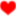

主要な設定はツールバーのアイコンから
[
{ ←JSON形式で
"url": "^https?://example\\.com/", ←URLは正規表現・行頭マッチで。「\」は「\\」と書く
"side": [ ←配列の中に1つづつCSSセレクターで
"div#side",
".sidebar"
],
"ranking": ["div.ranking"], ←1つならば配列でも
"related": "div.related" ←文字列でも良い
},
{
"url": "^https?://example2\\.(com|jp)/",
"footer": "footer",
"article":[
"div#main li",
"ul.articleList > li"
],
"paid": ["img.iconMember"],
"//": "この中に補足事項を書いておく。commentキーはコメント欄要素に当てているので注意"
}
]
www.example.com ←サイトの全要素をホワイトリストに入れる時はドメイン名（サブドメイン含む）を書き「$」はつけない www.example2.com$paid,comment ←特定の要素をホワイトリストに入れたい時は「$」の後ろに「,」で区切って要素名を書く news.example2.com$paid,comment ←サブドメインが変わればそれも書く（ワイルドカードや正規表現には非対応です）